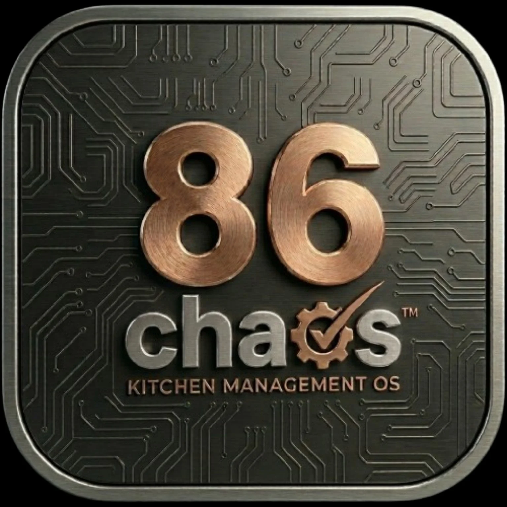

FAQ
Straight answers for busy restaurant operators.
What it costs, how setup works, why staff may actually use it, where AI stops, and how 86 Chaos fits beside the systems you already have.

Is Founder Beta really free?
Yes. Accepted restaurants receive 90 days free with no credit card and no purchase required. Free setup help is included during beta.
What happens after the 90 days?
There is no required purchase. Restaurants that choose to continue receive 50% off their selected plan for the first paid year.
Why is the Founder Beta limited?
86 Chaos is accepting a focused group of independent restaurants so each location can receive useful setup help and provide feedback that can actually shape the product before paid launch.
Do beta restaurants help shape the app?
Yes. Feedback from real shifts helps decide what gets simplified, improved, and built next. Founder restaurants also receive first access to new features where their selected plan allows.
I do not want another app. What does this replace?
86 Chaos is designed to replace scattered prep notes, group texts, paper reminders, disconnected spreadsheets, whiteboards, and the information that currently lives only in a manager’s head.
Will my staff actually use it?
The rollout starts with one simple workflow, not the whole system. 86Voice also lets staff use natural kitchen language for common actions instead of tapping through multiple screens.
Does 86 Chaos replace the POS?
No. Keep the POS. 86 Chaos handles the kitchen and manager work around it: prep, 86 alerts, schedules, availability, ordering support, inventory, reminders, maintenance, waste, and daily visibility.
What can 86Voice do?
86Voice can help with prep, tasks, reminders, 86 alerts, events, availability and request-off records, maintenance issues, burn/waste logs, Message Board posts where permitted, status questions, menu-impact questions, and AI ordering commands.
What makes Smart Kitchen the recommended plan?
Smart Kitchen is the main full-intelligence plan. It adds AI-assisted ordering, vendor-grouped drafts, forecasting, Menu Intelligence and 86 impact, invoice/menu scan intelligence, price warnings, waste/par insights, prep prediction, and advanced Manager Brief support.
Who is Owner Pro for?
Owner Pro is for operators who want everything in Smart Kitchen plus higher AI and scan limits, advanced reporting, deeper owner dashboards, and priority support.
Does AI place orders or make decisions automatically?
No. AI can suggest, explain, draft, alert, analyze, scan, forecast, summarize, and report. Managers approve actions that change business records, send vendor orders, spend money, publish schedules, or affect payroll, permissions, or billing.
How does AI-assisted ordering work?
It can use stock, par levels, pending orders, upcoming events, prep needs, waste, invoices, Menu Intelligence links, and vendor history to prepare a reviewable order draft and explain the signals behind it.
Is 86 Chaos only for large restaurants?
No. It is built for independent restaurants, bars, grills, and kitchens that need practical control without a corporate office or a giant enterprise platform.
Do I still need my own backups?
Yes. Restaurants should keep independent off-platform and off-site backups of business-critical records. Notifications, reminders, scans, AI, and automation can fail or be delayed and should not be the only safeguard.